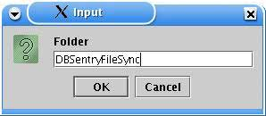
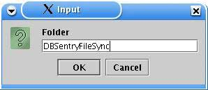

How to create new folder?
In Folder/Document List click the folder where you would like to create new folder.

| Creating New Folder |
|
How to create new folder? In Folder/Document List click the folder where you would like to create new folder.  | |